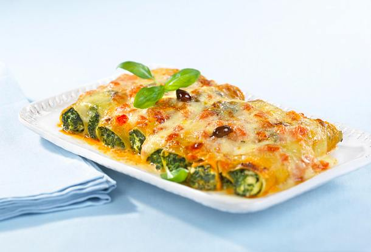

Spinach and Ricotta Cannelloni

Description
Cannelloni is a delicious italian dish. It consists of stuffed tube shaped pasta in sauce, that is covered with cheese.
One of my favorite meals!
Ingredients
- cream sauce
- 250g frozen spinach
- 500g ricotta
- 1/3 cup grate parmesan
- 1 large garlic clove
- 1/2 tsp salt and pepper
- 18-22 dried cannelloni tubes
- 1 cup of shredded mozzarella
Steps
Filling
- Heat up spinach
- Mix spinach with ricotta, parmesan and garlic
- Add salt and pepper according to taste
Assemble & Bake
- Preheat oven to 180C
- Assemble cannelloni tubes in a baking pan
- Stuff cannelloni tubes with the filling
- Pour the sauce over the cannelloni
- Scatter cheese, so that everything is covered
- Bake for 30 minutes
- The cannelloni are now ready to serve